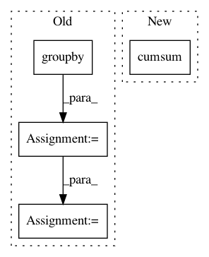

dbeab7509cfec1314b6529d57fbd090ce744695c,trackpy/motion.py,,compute_drift,#Any#Any#Any#,237
Before Change
del delta["frame"]
delta.reset_index("particle", drop=True, inplace=True)
delta.reset_index("frame", drop=False, inplace=True)
dx = delta.groupby("frame").mean()
if smoothing > 0:
dx = pd.rolling_mean(dx, smoothing, min_periods=0)
x = dx.cumsum(0)[pos_columns]
return x
def subtract_drift(traj, drift=None, inplace=False):
After Change
dx = f_diff.loc[mask, pos_columns + ["frame"]].groupby("frame").mean()
if smoothing > 0:
dx = pd.rolling_mean(dx, smoothing, min_periods=0)
return dx.cumsum()
def subtract_drift(traj, drift=None, inplace=False):
Return a copy of particle trajectories with the overall drift subtracted
In pattern: SUPERPATTERN
Frequency: 3
Non-data size: 4
Instances
Project Name: soft-matter/trackpy
Commit Name: dbeab7509cfec1314b6529d57fbd090ce744695c
Time: 2017-07-27
Author: caspervdw@gmail.com
File Name: trackpy/motion.py
Class Name:
Method Name: compute_drift
Project Name: soft-matter/trackpy
Commit Name: c6607119c25d0178245243ef3fdd3d176dd0d8f2
Time: 2020-01-22
Author: anntzer.lee@gmail.com
File Name: trackpy/linking/utils.py
Class Name:
Method Name: coords_from_df
Project Name: scipy/scipy
Commit Name: 6f6513963c3f568e5ad985a17a4aee0192223935
Time: 2019-07-17
Author: pete.mahler.larsen@gmail.com
File Name: scipy/spatial/_spherical_voronoi.py
Class Name: SphericalVoronoi
Method Name: _calc_vertices_regions